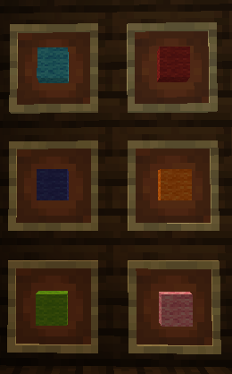
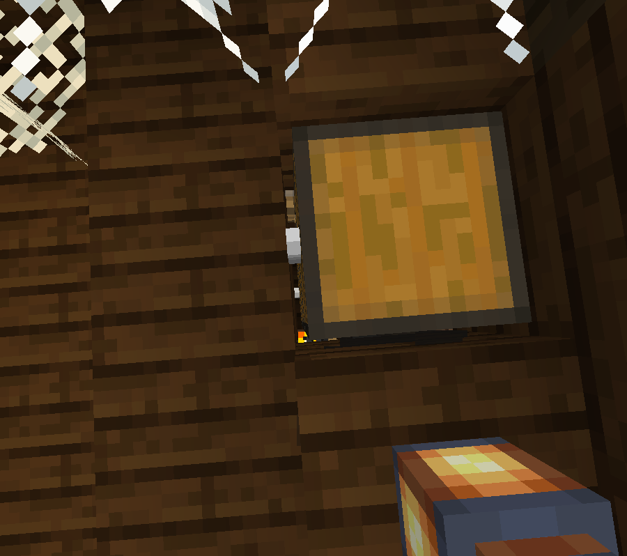
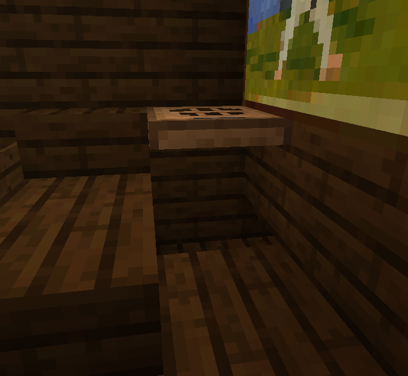
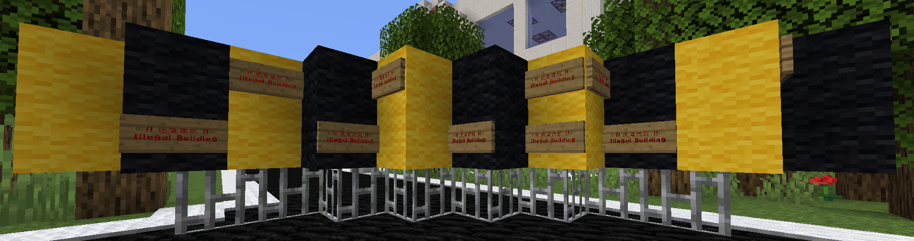
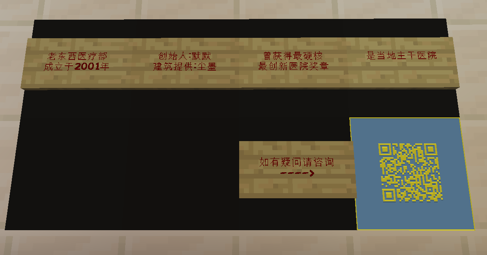

by xtsdcb69
MilK的家
在衣柜的左边，有六个物品展示框放着六种颜色的羊毛。这六种颜色对应着六个有代表色的Milkmapper的代表色，按照入团时间排序。右边则是呈镜像排列。

xtsdcb69 Im_SwordFish
tuffkotte sky_bow_chrs
CY_wl Chen_Mo_cht
在下面的床头柜中，放着一本"MilK的日记"。这本书尚未成书，意为让MilK继续写下去。
日记内容为 sky_bow_chrs 所作。
2020/4/20
今天在外面恰饭，恰van后去卖烧烤.没想到碰到了之前大学的一个小学弟庄稼，一堆人聚在哪里说是给一个叫天弓的庆祝生日(和庄稼同级)，没想到的是，庄稼(知道我的才能)推荐我去有名的零时差报社工作了！爷终于可以有一个正经的工作了！awaaaaaaaaaaaaaaaaaaaaaaaaaa
4月20日确实是天弓 (sky_bow_chrs) 的生日。
2020/4/21
把简历送到说是庄稼老板的邮箱去了.放了2年的简历啊
;w;
晚上最后一次卖烧烤，常客恭喜的同时也有点惋惜(MilK烧烤，杠杠滴好！)，最后一次收摊，满怀希望的同时也有些落寞
;w;
管他呢awa
2020/4/22
老板回了?!!!!ta让我一周后
(4/29)去报告，芜湖！！！！！！！！！！！！！！！
赶紧去买套西装来pwpqwq
崭新的西装买来了，干什么好呢......
van游戏！！！！！！！
西装放在物品展示框旁边的衣柜中，另一件是女装。
2020/4/23
highhhhhhhhhhhhhh
肝了一天原神high到不行了
wryyyyyyyyyyyyyyyyyyyyyyyyyyyyyyyyyyy
本图是给Mr_牛奶玩的，而且他也玩原神。
2020/4/24
芜湖湖湖湖湖湖湖湖湖湖湖
屁股肉真好van
当然也玩Phigros.
2020/4/25
打开我的minecraft，开始肝建筑，不得不说高版本建筑模式真的多种多样啊
等等我昨天几点睡的来着
2020/4/26
逛b站不知道为什么康到一个mc up主.....
诶诶诶是之前过生日的那个天弓?????
https://space.bilibili.com/105114070/video
记下来awa
(说实话他机子有点渣)
做个mc主播好像不戳的样子，就当业余吧bwbdwd
2020/4/27
2020/4/28
艹我是不是睡了一天?
md得赶紧调整精神明天就是第一天上班了
日记到这里也就结束了，也暗示了故事发生的那一天是2020年4月29日。
下到一楼，在右后方有一个箱子。但实际上，这下面还有三个箱子。除去最下面的箱子外，其他的箱子都是空的。最下面的箱子有一个拉杆，一个可放置在深色橡木楼梯上的活板门，以及总计62个不均匀分布的棕色染料"奥利给"。
在下面的三个箱子中，只有最下面的箱子的朝向和最上面的一样。
拉杆作用待定。
得到活板门后，可以放在右边的椅子的右侧，如图示方式放置。
随后，打开活板门，站到活板门所处方块处，然后再关闭活板门让角色趴下，向右边看去，能看到一个拉杆。拉下拉杆后离开活板门，即可看见一个缺口。直接进入缺口，就会进入一个小房间。作用待定。
零时差报社打卡
离开MilK的家后回头，将触发一次性对话:
* 钥匙和锁孔对不上。
<MilK> ???难不成外面的锁被掉包了?
并且门也无法打开。
右边通往医院的路被封上了，并且挂有许多"违章建筑"告示牌。
当你在零时差报社重复打卡时，将会触发对话:
-- 您今日已打卡 --
当你重复打卡达到100次时，将会触发一次性对话:
-- 打卡机坏了。--
触发该对话后，并不会触发任何其他结局。
医院
在医院的公告栏的右下角有一个二维码，此二维码通向本地图官网。
